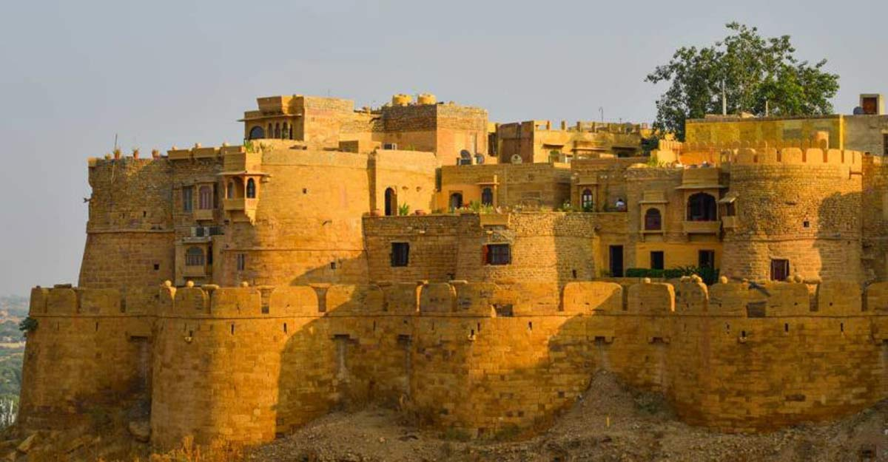

Gadisar Lake
Built By:
King Rawal Jaisal
Built In:
1156 AD
Fact:
It is said that this lake once provided water to the entire city. Presently, the water comes in the Gadisar Lake from Indira Gandhi Canal, so it never dries.

Lodhurva Jain temple
Built By:
Rawal Deoraj
Built In:
8th−9th century CE
Fact:
Lodhurva is one of the important Jain center.

Jaisalmer Fort
Built By:
Rajput Rawal Jaisal
Built In:
1156 AD
Fact:
Jaisalmer Fort is the second oldest fort in Rajasthan, built in 1156 AD by the Rajput Rawal (ruler) Jaisal from whom it derives its name, and stood at the crossroads of important trade routes (including the ancient Silk road).